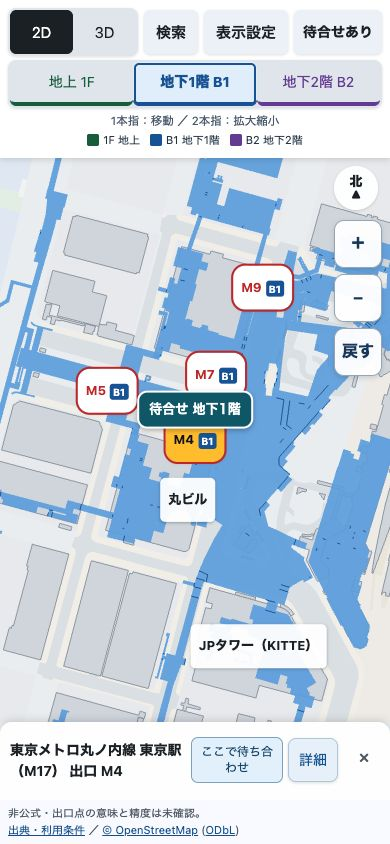
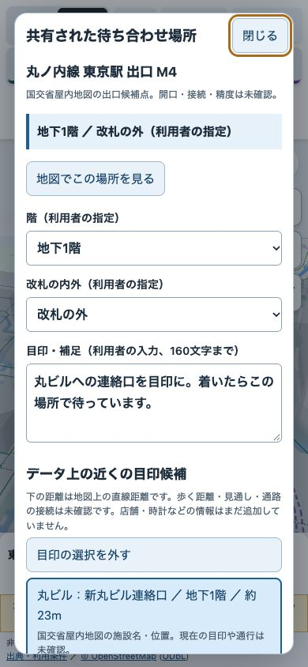
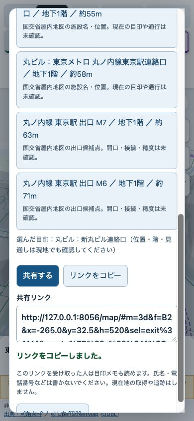

東京駅案内版・待ち合わせ機能の確認版 rev-01 ／ 2026-10-29
「ここで待とう」を、階と目印ごと共有
結論：地点・階・改札の内外・目印をリンクで共有できる確認版を作りました。
要判断：まずiPhoneで、場所の選び方と受け取った画面が分かるかを試してください。
詳細：下の地図と音声・字幕付き説明から確認できます。
使い方
- 建物・出口・改札などを選び、カードの「ここで待ち合わせ」を押します。
- 階と改札の内外を指定し、目印の補足を書きます。「データ上の近くの目印候補」から連絡口なども選べます。
- 「共有する」か「リンクをコピー」を押して相手へ渡します。共有機能が使えない場合は、表示されたURLを選択してコピーできます。
- 相手はリンクから同じ地点・階・目印を開けます。「地図でこの場所を見る」で地図に戻れます。
実画面での説明
VOICEVOX:ずんだもん（ノーマル）。Macのブラウザで撮った実画面です。開発中の画面にあるlocalhostのURLは、そのMac用です。上のボタンは外出先のiPhoneで開けます。
追加した情報
データ上の目印：既存資料の建物名・出口・改札・連絡口など。候補ごとに出典の種類と未確認事項を表示します。
利用者の補足：現地で確認した柱の番号や看板などを、160文字まで入力できます。店舗・時計・写真の新しい情報は今回収集していません。
候補の距離は地図上の直線距離です。同じ階にあること、見えること、通れることを一律に保証する表示ではありません。



確認したことと、残る確認
地点・階・メモ・目印候補のリンク復元、表示階や2D/3Dを変えたときの保持、コピー操作、スマホ相当390pxとパソコン1440pxの表示を確認しました。既存の操作を含む49件のテストが通っています。地理データ6ファイルは元の公開rev-06と同一です。
iPhone実機の共有先アプリ、VoiceOver、現地での目印の見え方・待てる位置は未確認です。位置が分からない出口は共有対象にしていません。店舗や時計などの新規の目印データ、写真、現在地の共有・追跡、道順案内は追加していません。
目印メモはリンクの受取人に見えます。氏名・電話番号等を書かずに使ってください。入力内容を保存するサーバーやログイン機能はありません。
実装はClaude Codeが未ログインで着手できなかったため、主担当Codexが公開済み版のコピーで代替しました。元の地図とClaudeの書きかけは変更していません。これは機能の確認版で、ODPTの対象データ条件や応募完了を意味しません。